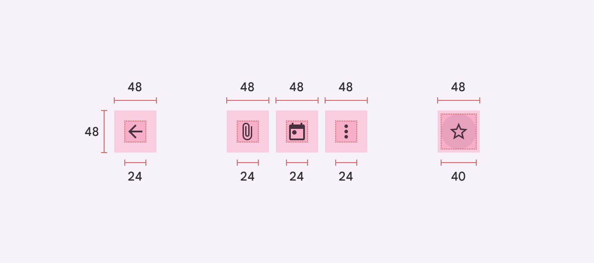
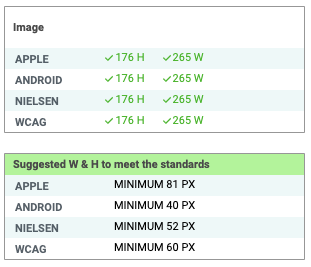

1️⃣ Touch target size ✅#
What is touch target size?#
Target size refers to how large or small buttons or other clickable/touchable targets are on a website.
{kind=link}
Touch target size in the WCAG ✅#
The following is from WCAG 2.1 Success Criterion 2.5.5: Target Size (Level AAA). The WCAG can be difficult to understand but we will work through it to understand it and how to apply it. Please read the following WCAG excerpt and then answer the following questions.
The size of the target for pointer inputs is at least 44 by 44 CSS pixels except when:
- Equivalent:
The target is available through an equivalent link or control on the same page that is at least 44 by 44 CSS pixels;
- Inline:
The target is in a sentence or block of text;
- User Agent Control:
The size of the target is determined by the user agent and is not modified by the author;
- Essential:
A particular presentation of the target is essential to the information being conveyed.
MCQ
Generally, what is the minimum target size from the WCAG?
MCQ
The headings Equivalent, Inline, User Agent Control and Essential refer to properties that pointer targets...
Why does touch target size matter? ✅#
Here is another excerpt from WCAG 2.1 Success Criterion 2.5.5: Target Size (Level AAA). Please read it then answer the following questions.
The intent of this success criteria is to ensure that target sizes are large enough for users to easily activate them, even if the user is accessing content on a small handheld touch screen device, has limited dexterity, or has trouble activating small targets for other reasons. For instance, mice and similar pointing devices can be hard to use for these users, and a larger target will help them activate the target.
MCQ
From this excerpt, why is it important to have large enough target sizes?
Different target size standards#
As well as the WCAG, there are other important standards for touch target size. Apple and Android both have guidelines for developers as well as the Nielsen group who provide guidance on user experience. However these standards are all slightly different and in different units which makes it difficult to check if all of them are fulfilled.
- Apple:
44 x 44 pt
- Android:
48 x 48 dp
- Nielsen:
1 x 1 cm
- WCAG:
44 x 44 CSS pixels
Adee simplifies these by converting the standards to the same unit, px. Adee also helps designers check whether the standards are fulfilled all at one glance. This makes it far easier and quicker for designers to check all of these guidelines at once.
{kind=link}
Above is a screenshot from the Adee interface. The upper table shows the size of the selected target in pixels and whether it meets each of the 4 accessibility standards for the device type selected. The lower table shows the minimum height and width needed for the button depending on the device type selected.
Device size#
Minimum touch target size depends on the device displaying the interface. Adee automatically calculates the minimum touch size depending on which device you select. It is important to check that a design fulfils the required standards for a range of devices.
Tip
For elements to be shown in Adee, they must be selected in Figma. Either click or drag-select over elements to select them in Figma.
Adee task 1#
Adee task 1
Check the target size of a button against accessibility standards.
Select the button under Task 1
Open the Adee plugin to “Touch Size Checker tool”
Test the size of the button if an iPhone Mini device was used
Based on the results, explain how a designer should improve the button size for better accessibility
Close the plugin
Adee task rating
Rate the difficulty of Adee task 1Knowledge self-rating
How well do you understand target size?